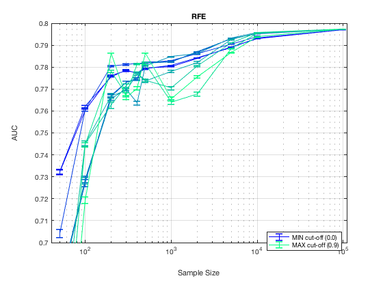
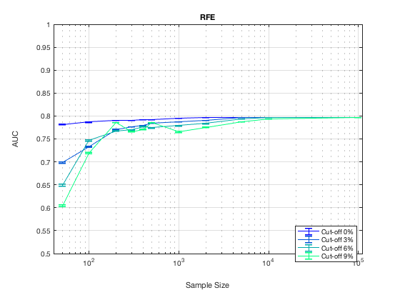

TieNet. Summary. RFE.
summary_stable_vars("TieNet", 2)
Figure 51. Model Generalizatbility. RFE
________________________________________

Figure 52. Feature Generalizability. RFE
_________________________________________

Table 60. Stability Cut Off Performance. Sample Size = 50. RFE.
________________________________________________________________
Stability Model_Generalizability Feature_Generalizability Number_Stable_Features Number_Non_Zero
_________ ______________________ ________________________ ______________________ _______________
'>= 0%' ' 0.732 +/- 0.001 ' ' 0.781 +/- 0.001 ' ' 10.6 +/- 0.1 ' 50
'>=10%' ' 0.732 +/- 0.001 ' ' 0.781 +/- 0.001 ' ' 10.6 +/- 0.1 ' 50
'>=20%' ' 0.704 +/- 0.002 ' ' 0.746 +/- 0.001 ' ' 5.0 +/- 0.0 ' 50
'>=30%' ' 0.679 +/- 0.002 ' ' 0.699 +/- 0.002 ' ' 1.9 +/- 0.0 ' 50
'>=40%' ' 0.680 +/- 0.002 ' ' 0.699 +/- 0.002 ' ' 1.9 +/- 0.0 ' 50
'>=50%' ' 0.678 +/- 0.002 ' ' 0.683 +/- 0.002 ' ' 1.4 +/- 0.0 ' 39
'>=60%' ' 0.649 +/- 0.002 ' ' 0.649 +/- 0.002 ' ' 1.2 +/- 0.0 ' 27
'>=70%' ' 0.645 +/- 0.003 ' ' 0.645 +/- 0.003 ' ' 1.1 +/- 0.0 ' 17
'>=80%' ' 0.618 +/- 0.003 ' ' 0.618 +/- 0.003 ' ' 1.0 +/- 0.0 ' 8
'>=90%' ' 0.604 +/- 0.003 ' ' 0.604 +/- 0.003 ' ' 1.0 +/- 0.0 ' 4
Table 61. Stability Cut Off Performance. Sample Size = 100. RFE.
_________________________________________________________________
Stability Model_Generalizability Feature_Generalizability Number_Stable_Features Number_Non_Zero
_________ ______________________ ________________________ ______________________ _______________
'>= 0%' ' 0.760 +/- 0.001 ' ' 0.787 +/- 0.000 ' ' 9.6 +/- 0.1 ' 50
'>=10%' ' 0.762 +/- 0.001 ' ' 0.787 +/- 0.000 ' ' 9.6 +/- 0.1 ' 50
'>=20%' ' 0.760 +/- 0.001 ' ' 0.778 +/- 0.000 ' ' 5.0 +/- 0.0 ' 50
'>=30%' ' 0.727 +/- 0.002 ' ' 0.733 +/- 0.002 ' ' 2.2 +/- 0.0 ' 45
'>=40%' ' 0.729 +/- 0.002 ' ' 0.733 +/- 0.002 ' ' 2.2 +/- 0.0 ' 45
'>=50%' ' 0.728 +/- 0.002 ' ' 0.730 +/- 0.002 ' ' 1.7 +/- 0.0 ' 38
'>=60%' ' 0.745 +/- 0.001 ' ' 0.747 +/- 0.001 ' ' 1.4 +/- 0.0 ' 29
'>=70%' ' 0.745 +/- 0.001 ' ' 0.747 +/- 0.001 ' ' 1.3 +/- 0.0 ' 22
'>=80%' ' 0.745 +/- 0.001 ' ' 0.745 +/- 0.001 ' ' 1.1 +/- 0.0 ' 13
'>=90%' ' 0.719 +/- 0.001 ' ' 0.719 +/- 0.001 ' ' 1.0 +/- 0.0 ' 4
Table 62. Stability Cut Off Performance. Sample Size = 200. RFE.
_________________________________________________________________
Stability Model_Generalizability Feature_Generalizability Number_Stable_Features Number_Non_Zero
_________ ______________________ ________________________ ______________________ _______________
'>= 0%' ' 0.776 +/- 0.000 ' ' 0.791 +/- 0.000 ' ' 12.6 +/- 0.2 ' 50
'>=10%' ' 0.776 +/- 0.000 ' ' 0.791 +/- 0.000 ' ' 12.6 +/- 0.2 ' 50
'>=20%' ' 0.781 +/- 0.000 ' ' 0.787 +/- 0.000 ' ' 5.4 +/- 0.1 ' 50
'>=30%' ' 0.767 +/- 0.001 ' ' 0.771 +/- 0.001 ' ' 2.5 +/- 0.0 ' 50
'>=40%' ' 0.767 +/- 0.001 ' ' 0.771 +/- 0.001 ' ' 2.5 +/- 0.0 ' 50
'>=50%' ' 0.766 +/- 0.001 ' ' 0.768 +/- 0.001 ' ' 1.9 +/- 0.0 ' 45
'>=60%' ' 0.767 +/- 0.001 ' ' 0.768 +/- 0.001 ' ' 1.7 +/- 0.0 ' 38
'>=70%' ' 0.763 +/- 0.001 ' ' 0.762 +/- 0.001 ' ' 1.4 +/- 0.0 ' 29
'>=80%' ' 0.778 +/- 0.001 ' ' 0.778 +/- 0.001 ' ' 1.4 +/- 0.0 ' 17
'>=90%' ' 0.786 +/- 0.000 ' ' 0.786 +/- 0.000 ' ' 1.2 +/- 0.0 ' 9
Table 63. Stability Cut Off Performance. Sample Size = 300. RFE.
_________________________________________________________________
Stability Model_Generalizability Feature_Generalizability Number_Stable_Features Number_Non_Zero
_________ ______________________ ________________________ ______________________ _______________
'>= 0%' ' 0.778 +/- 0.000 ' ' 0.790 +/- 0.000 ' ' 12.4 +/- 0.2 ' 50
'>=10%' ' 0.779 +/- 0.000 ' ' 0.790 +/- 0.000 ' ' 12.4 +/- 0.2 ' 50
'>=20%' ' 0.781 +/- 0.000 ' ' 0.788 +/- 0.000 ' ' 6.0 +/- 0.1 ' 50
'>=30%' ' 0.773 +/- 0.001 ' ' 0.776 +/- 0.001 ' ' 2.8 +/- 0.0 ' 50
'>=40%' ' 0.773 +/- 0.001 ' ' 0.776 +/- 0.001 ' ' 2.8 +/- 0.0 ' 50
'>=50%' ' 0.770 +/- 0.001 ' ' 0.772 +/- 0.001 ' ' 1.9 +/- 0.0 ' 49
'>=60%' ' 0.769 +/- 0.001 ' ' 0.770 +/- 0.001 ' ' 1.7 +/- 0.0 ' 42
'>=70%' ' 0.772 +/- 0.001 ' ' 0.772 +/- 0.001 ' ' 1.6 +/- 0.0 ' 37
'>=80%' ' 0.768 +/- 0.001 ' ' 0.768 +/- 0.001 ' ' 1.2 +/- 0.0 ' 29
'>=90%' ' 0.766 +/- 0.001 ' ' 0.766 +/- 0.001 ' ' 1.1 +/- 0.0 ' 20
Table 64. Stability Cut Off Performance. Sample Size = 400. RFE.
_________________________________________________________________
Stability Model_Generalizability Feature_Generalizability Number_Stable_Features Number_Non_Zero
_________ ______________________ ________________________ ______________________ _______________
'>= 0%' ' 0.777 +/- 0.000 ' ' 0.791 +/- 0.000 ' ' 15.9 +/- 0.3 ' 50
'>=10%' ' 0.777 +/- 0.000 ' ' 0.791 +/- 0.000 ' ' 15.9 +/- 0.3 ' 50
'>=20%' ' 0.782 +/- 0.000 ' ' 0.789 +/- 0.000 ' ' 8.9 +/- 0.2 ' 50
'>=30%' ' 0.775 +/- 0.000 ' ' 0.779 +/- 0.000 ' ' 3.9 +/- 0.1 ' 50
'>=40%' ' 0.774 +/- 0.000 ' ' 0.779 +/- 0.000 ' ' 3.9 +/- 0.1 ' 50
'>=50%' ' 0.764 +/- 0.001 ' ' 0.766 +/- 0.001 ' ' 2.5 +/- 0.0 ' 47
'>=60%' ' 0.777 +/- 0.000 ' ' 0.777 +/- 0.000 ' ' 2.0 +/- 0.0 ' 36
'>=70%' ' 0.777 +/- 0.000 ' ' 0.778 +/- 0.000 ' ' 1.4 +/- 0.0 ' 24
'>=80%' ' 0.781 +/- 0.000 ' ' 0.781 +/- 0.000 ' ' 1.4 +/- 0.0 ' 18
'>=90%' ' 0.770 +/- 0.001 ' ' 0.770 +/- 0.001 ' ' 1.1 +/- 0.0 ' 12
Table 65. Stability Cut Off Performance. Sample Size = 500. RFE.
_________________________________________________________________
Stability Model_Generalizability Feature_Generalizability Number_Stable_Features Number_Non_Zero
_________ ______________________ ________________________ ______________________ _______________
'>= 0%' ' 0.780 +/- 0.000 ' ' 0.792 +/- 0.000 ' ' 17.2 +/- 0.3 ' 50
'>=10%' ' 0.779 +/- 0.000 ' ' 0.792 +/- 0.000 ' ' 17.2 +/- 0.3 ' 50
'>=20%' ' 0.782 +/- 0.000 ' ' 0.788 +/- 0.000 ' ' 8.5 +/- 0.2 ' 50
'>=30%' ' 0.782 +/- 0.000 ' ' 0.785 +/- 0.000 ' ' 3.6 +/- 0.0 ' 50
'>=40%' ' 0.782 +/- 0.000 ' ' 0.785 +/- 0.000 ' ' 3.6 +/- 0.0 ' 50
'>=50%' ' 0.781 +/- 0.000 ' ' 0.782 +/- 0.000 ' ' 2.5 +/- 0.0 ' 50
'>=60%' ' 0.774 +/- 0.001 ' ' 0.775 +/- 0.001 ' ' 1.9 +/- 0.0 ' 46
'>=70%' ' 0.774 +/- 0.001 ' ' 0.775 +/- 0.001 ' ' 1.6 +/- 0.0 ' 37
'>=80%' ' 0.782 +/- 0.000 ' ' 0.782 +/- 0.000 ' ' 1.3 +/- 0.0 ' 25
'>=90%' ' 0.786 +/- 0.000 ' ' 0.786 +/- 0.000 ' ' 1.1 +/- 0.0 ' 12
Table 66. Stability Cut Off Performance. Sample Size = 1000. RFE.
__________________________________________________________________
Stability Model_Generalizability Feature_Generalizability Number_Stable_Features Number_Non_Zero
_________ ______________________ ________________________ ______________________ _______________
'>= 0%' ' 0.780 +/- 0.000 ' ' 0.795 +/- 0.000 ' ' 33.8 +/- 0.3 ' 50
'>=10%' ' 0.781 +/- 0.000 ' ' 0.795 +/- 0.000 ' ' 33.8 +/- 0.3 ' 50
'>=20%' ' 0.783 +/- 0.000 ' ' 0.793 +/- 0.000 ' ' 20.5 +/- 0.3 ' 50
'>=30%' ' 0.782 +/- 0.000 ' ' 0.787 +/- 0.000 ' ' 8.4 +/- 0.2 ' 50
'>=40%' ' 0.782 +/- 0.000 ' ' 0.787 +/- 0.000 ' ' 8.4 +/- 0.2 ' 50
'>=50%' ' 0.785 +/- 0.000 ' ' 0.787 +/- 0.000 ' ' 5.6 +/- 0.1 ' 49
'>=60%' ' 0.778 +/- 0.001 ' ' 0.779 +/- 0.001 ' ' 3.4 +/- 0.1 ' 48
'>=70%' ' 0.770 +/- 0.001 ' ' 0.771 +/- 0.001 ' ' 1.9 +/- 0.0 ' 45
'>=80%' ' 0.764 +/- 0.001 ' ' 0.764 +/- 0.001 ' ' 1.3 +/- 0.0 ' 35
'>=90%' ' 0.766 +/- 0.001 ' ' 0.766 +/- 0.001 ' ' 1.2 +/- 0.0 ' 26
Table 67. Stability Cut Off Performance. Sample Size = 2000. RFE.
__________________________________________________________________
Stability Model_Generalizability Feature_Generalizability Number_Stable_Features Number_Non_Zero
_________ ______________________ ________________________ ______________________ _______________
'>= 0%' ' 0.784 +/- 0.000 ' ' 0.796 +/- 0.000 ' ' 38.4 +/- 0.3 ' 50
'>=10%' ' 0.784 +/- 0.000 ' ' 0.796 +/- 0.000 ' ' 38.4 +/- 0.3 ' 50
'>=20%' ' 0.786 +/- 0.000 ' ' 0.795 +/- 0.000 ' ' 27.2 +/- 0.3 ' 50
'>=30%' ' 0.787 +/- 0.000 ' ' 0.790 +/- 0.000 ' ' 10.8 +/- 0.2 ' 50
'>=40%' ' 0.787 +/- 0.000 ' ' 0.790 +/- 0.000 ' ' 10.8 +/- 0.2 ' 50
'>=50%' ' 0.786 +/- 0.000 ' ' 0.788 +/- 0.000 ' ' 7.4 +/- 0.2 ' 50
'>=60%' ' 0.782 +/- 0.000 ' ' 0.783 +/- 0.000 ' ' 5.0 +/- 0.1 ' 50
'>=70%' ' 0.781 +/- 0.000 ' ' 0.781 +/- 0.000 ' ' 3.2 +/- 0.1 ' 49
'>=80%' ' 0.768 +/- 0.001 ' ' 0.768 +/- 0.001 ' ' 2.0 +/- 0.0 ' 48
'>=90%' ' 0.776 +/- 0.001 ' ' 0.776 +/- 0.001 ' ' 1.5 +/- 0.0 ' 33
Table 68. Stability Cut Off Performance. Sample Size = 5000. RFE.
__________________________________________________________________
Stability Model_Generalizability Feature_Generalizability Number_Stable_Features Number_Non_Zero
_________ ______________________ ________________________ ______________________ _______________
'>= 0%' ' 0.789 +/- 0.000 ' ' 0.797 +/- 0.000 ' ' 48.2 +/- 0.1 ' 50
'>=10%' ' 0.789 +/- 0.000 ' ' 0.797 +/- 0.000 ' ' 48.2 +/- 0.1 ' 50
'>=20%' ' 0.791 +/- 0.000 ' ' 0.797 +/- 0.000 ' ' 39.8 +/- 0.2 ' 50
'>=30%' ' 0.793 +/- 0.000 ' ' 0.796 +/- 0.000 ' ' 26.1 +/- 0.1 ' 50
'>=40%' ' 0.793 +/- 0.000 ' ' 0.796 +/- 0.000 ' ' 26.1 +/- 0.1 ' 50
'>=50%' ' 0.793 +/- 0.000 ' ' 0.796 +/- 0.000 ' ' 21.1 +/- 0.1 ' 50
'>=60%' ' 0.793 +/- 0.000 ' ' 0.794 +/- 0.000 ' ' 16.0 +/- 0.1 ' 50
'>=70%' ' 0.791 +/- 0.000 ' ' 0.792 +/- 0.000 ' ' 11.8 +/- 0.1 ' 50
'>=80%' ' 0.789 +/- 0.000 ' ' 0.789 +/- 0.000 ' ' 7.5 +/- 0.1 ' 50
'>=90%' ' 0.787 +/- 0.000 ' ' 0.787 +/- 0.000 ' ' 4.4 +/- 0.1 ' 48
Table 69. Stability Cut Off Performance. Sample Size = 10000. RFE.
___________________________________________________________________
Stability Model_Generalizability Feature_Generalizability Number_Stable_Features Number_Non_Zero
_________ ______________________ ________________________ ______________________ _______________
'>= 0%' ' 0.793 +/- 0.000 ' ' 0.797 +/- 0.000 ' ' 48.6 +/- 0.1 ' 50
'>=10%' ' 0.793 +/- 0.000 ' ' 0.797 +/- 0.000 ' ' 48.6 +/- 0.1 ' 50
'>=20%' ' 0.794 +/- 0.000 ' ' 0.797 +/- 0.000 ' ' 41.8 +/- 0.2 ' 50
'>=30%' ' 0.795 +/- 0.000 ' ' 0.797 +/- 0.000 ' ' 32.2 +/- 0.1 ' 50
'>=40%' ' 0.795 +/- 0.000 ' ' 0.797 +/- 0.000 ' ' 32.2 +/- 0.1 ' 50
'>=50%' ' 0.796 +/- 0.000 ' ' 0.797 +/- 0.000 ' ' 28.8 +/- 0.1 ' 50
'>=60%' ' 0.796 +/- 0.000 ' ' 0.797 +/- 0.000 ' ' 25.7 +/- 0.1 ' 50
'>=70%' ' 0.796 +/- 0.000 ' ' 0.797 +/- 0.000 ' ' 22.6 +/- 0.1 ' 50
'>=80%' ' 0.796 +/- 0.000 ' ' 0.796 +/- 0.000 ' ' 19.6 +/- 0.1 ' 50
'>=90%' ' 0.794 +/- 0.000 ' ' 0.794 +/- 0.000 ' ' 15.7 +/- 0.1 ' 50
Table 70. Stability Cut Off Performance. Sample Size = 100000. RFE.
____________________________________________________________________
Stability Model_Generalizability Feature_Generalizability Number_Stable_Features Number_Non_Zero
_________ ______________________ ________________________ ______________________ _______________
'>= 0%' ' 0.797 +/- 0.000 ' ' 0.797 +/- 0.000 ' ' 44.0 +/- 0.2 ' 50
'>=10%' ' 0.797 +/- 0.000 ' ' 0.797 +/- 0.000 ' ' 44.0 +/- 0.2 ' 50
'>=20%' ' 0.797 +/- 0.000 ' ' 0.797 +/- 0.000 ' ' 35.1 +/- 0.2 ' 50
'>=30%' ' 0.797 +/- 0.000 ' ' 0.797 +/- 0.000 ' ' 28.5 +/- 0.0 ' 50
'>=40%' ' 0.797 +/- 0.000 ' ' 0.797 +/- 0.000 ' ' 28.5 +/- 0.0 ' 50
'>=50%' ' 0.797 +/- 0.000 ' ' 0.797 +/- 0.000 ' ' 27.0 +/- 0.0 ' 50
'>=60%' ' 0.797 +/- 0.000 ' ' 0.797 +/- 0.000 ' ' 26.0 +/- 0.0 ' 50
'>=70%' ' 0.797 +/- 0.000 ' ' 0.797 +/- 0.000 ' ' 25.2 +/- 0.0 ' 50
'>=80%' ' 0.797 +/- 0.000 ' ' 0.797 +/- 0.000 ' ' 24.5 +/- 0.0 ' 50
'>=90%' ' 0.797 +/- 0.000 ' ' 0.797 +/- 0.000 ' ' 23.9 +/- 0.0 ' 50